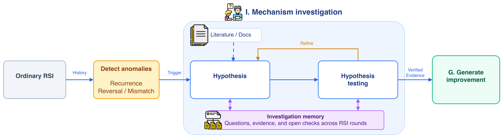

Uses Lean 4 proof generation as one of two evaluation domains for recursive self-improvement of agentic proving workflows, with Lean compiler feedback.
Abstract
Recursive self-improvement (RSI) enables agents to iteratively optimize their workflows via execution feedback. However, standard RSI typically operates as a first-order optimizer: it repeatedly patches surface-level parameters in response to immediate failure symptoms, often leading to trial-and-error thrashing without resolving underlying mechanisms. To address this limitation, we introduce SO-RSI, a framework that elevates workflow optimization to a second-order diagnostic inquiry, investigating why failures occur before committing to structural interventions. SO-RSI passively monitors execution traces for three structural anomalies (recurrence, opposing edits, and expectation mismatch) to trigger targeted mechanism investigations. By executing lightweight diagnostic probes and maintaining persistent inquiry memory across RSI rounds, SO-RSI accumulates causal evidence to guide systematic workflow edits rather than parameter patches. Across Lean 4 proof generation and Verus-based verifiable code generation, SO-RSI improves final held-out pass rates over Naive RSI by 21.8 and 25.8 percentage points under matched 24-hour search budgets. Behavioral analyses further confirm that SO-RSI substantially suppresses failure recurrence and eliminates unproductive zero-progress optimization loops.
Problem
Recursive self-improvement (RSI) of agent workflows tends to act as a first-order optimizer. It patches surface parameters in response to failures, which leads to oscillating fixes and recurring failures without resolving underlying causes.
Approach
SO-RSI monitors RSI execution traces for three anomalies: recurrence, opposing edits, and expectation mismatch. These anomalies trigger mechanism investigations. The agent forms hypotheses, runs lightweight executable diagnostic probes, and keeps a persistent inquiry memory across rounds to guide structural workflow edits. It is evaluated on Lean 4 proof generation (RSI-Exam plus VeriSoftBench problems) and Verus verifiable code generation (VeriContest), each under a 24-hour outer budget.

Figure 2: From first-order thrashing to second-order improvement. Anomalies in the RSI history trigger mechanism investigation (I); diagnostic evidence guides a workflow change (G), evaluated by ordinary RSI. Within I, the agent forms and tests hypotheses, consults external knowledge when needed, and retains findings across RSI rounds.
Results
SO-RSI reaches 71.2% held-out pass rate on Lean versus 49.4% for Naive RSI, and 59.2% versus 33.4% on Verus. Ablations show that both executable probes and persistent memory contribute. Failure recurrence and zero-progress loops are reduced.
Method
Lean pass
Lean Δ
Verus VCG pass
VCG Δ
Initial workflow S0
29.4
0.0
14.8
0.0
Naive RSI
49.4±2.8
+20.0
33.4±5.2
+18.6
SO-RSI
71.2±1.9
+41.8
59.2±3.7
+44.4
Held-out pass rates (%) under a 24-hour outer budget